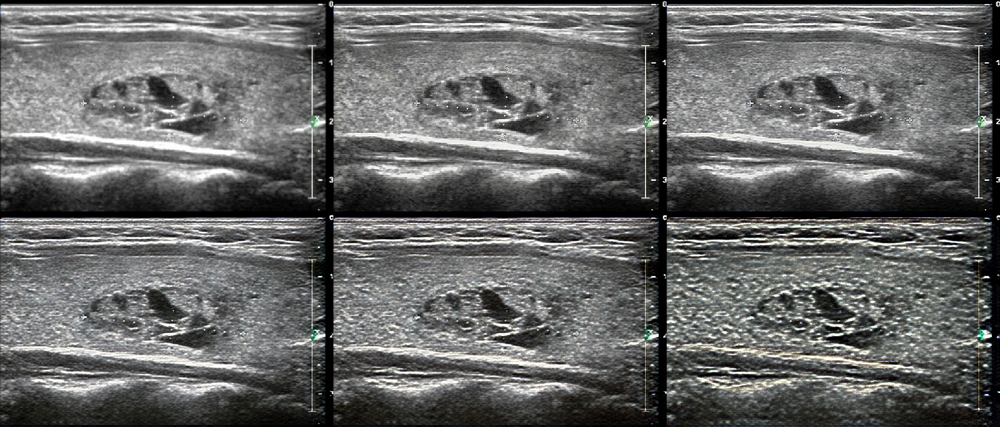

Image Quality Improvement of Mobile Ultrasound Devices

Published Wed 06 September 2023
Mobile ultrasound devices play a vital role in emergency and family doctor services. However, the image quality of these devices, compared to traditional medical ultrasound equipment, leaves room for improvement.
We propose the Hyper-CycleGAN model to implement a structure-preserving mapping between low-quality ultrasound images and corresponding high-quality images, and plan to incorporate an attention mechanism to enable the model to better focus on important areas within the image.
These are some of our preliminary results.
© Generalized Electric Medicine 2023 of Macao polytechnic university.
The Generalized Electric Medicine is part of Faculty of Applied Sciences of the Macao polytechnic university.